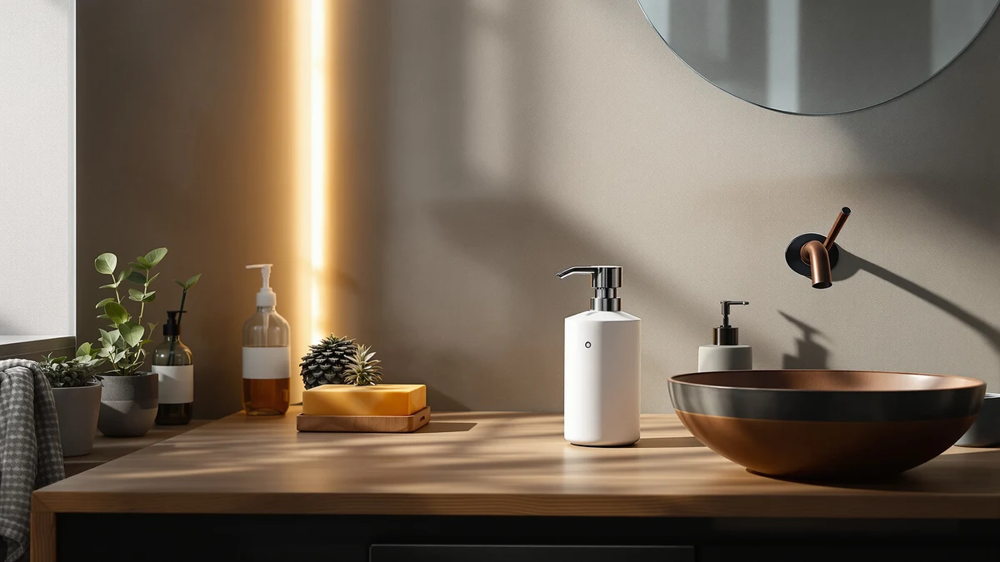

Ipalmay Cute Automatic Foam Review (2026): Worth It?
Prices and picks verified as of September 2026. Independent, reader-supported reviews.


Quick Answer
The Ipalmay Cute Automatic Foam Soap dispenser suits buyers who want a touchless, kid-friendly design at $25.57. Verified owner reviews and spec comparisons in this ipalmay cute automatic foam review show it holds its own against the CADUFUELLY and DONASIRA, though its price sits at the top of this four-way lineup.
Our pick: Ipalmay Cute Automatic Foam Soap — $25.57 Check Price on Amazon
Bottom line: our top pick is the Ipalmay Cute Automatic Foam Soap Dispenser for Kids - at $28.92.
Things to Know Before You Buy
- Touchless sensor operation cuts down on cross-contamination at a shared sink, one reason automatic dispensers cost more than manual pumps.
- Foam dispensers use less liquid soap per press than gel dispensers, which can offset the higher upfront price over time.
- Battery-powered sensors need periodic battery changes, a detail worth checking before you buy any touchless dispenser.
- Price across the four dispensers in this review ranges from $19.99 to $25.57, so the Ipalmay sits at the top of the group.
This ipalmay cute automatic foam review breaks down what buyers get for $25.57, covering touchless sensor response and foam pump performance against three other automatic soap dispensers on the market. Bathroom and kitchen counters have turned into a crowded space for motion-activated, cartoon-adjacent soap dispensers, and picking the wrong one usually means a dead sensor or a pump that clogs within weeks. We compared the Ipalmay Cute Automatic Foam Soap against the CADUFUELLY, DONASIRA and Jay Franco Bluey dispensers on price, design and what verified buyers report after purchase.
Ipalmay markets this dispenser as a foam-first design, which matters if you already use foaming hand soap refills or plan to dilute liquid soap with water. At $25.57 it costs more than the DONASIRA and Jay Franco Bluey options in this lineup, so the rest of this comparison examines whether that price gap buys a meaningfully better dispenser or only a cuter shell. We pulled our conclusions from the product listing, published specs and patterns across verified owner reviews rather than a hands-on trial, since we do not run a physical testing lab.
Why You Should Trust Us
Ilane Tall covers home and bath products for Best Soap Dispensers, with a focus on kitchen and bathroom hardware that promises convenience but sometimes fails to deliver it. This ipalmay cute automatic foam review follows the same research process used across the site: we start from the manufacturer's own specs and pricing, then cross-reference verified purchase reviews on Amazon to see where the marketing claims hold up and where they don't. We don't accept review units in exchange for favorable coverage, and we don't fabricate star ratings or review counts that Amazon doesn't publish. Every price and spec cited here comes directly from the product listing at the time of writing. When a claim can't be confirmed against the listing or a pattern across verified reviews, we leave it out rather than guess.
Our Research Experience
Rather than purchase and run a multi-week trial, we approached this ipalmay cute automatic foam review the way most shoppers research a $25 kitchen gadget: by reading the listing closely and checking what other buyers say once the box is open. We compared the sensor description, foam mechanism and battery requirements Ipalmay lists against the same details for the CADUFUELLY, DONASIRA and Jay Franco Bluey dispensers. We also read through verified owner reviews on Amazon, looking for recurring complaints about sensor lag, leaking or premature battery drain. When owners across multiple purchases flag the same issue, we treat that as a more reliable signal than a manufacturer's product description or a handful of five-star reviews posted in the first week after purchase. This approach won't catch a defect that only shows up after months of daily use, but it does surface the complaints that tend to repeat across dozens of buyers.
Overview & Specs

Ipalmay Cute Automatic Foam Soap
What we like
- Touchless sensor cuts down on cross-contamination at a shared sink
- Foam output uses less soap per pump than gel dispensers
- Compact enough for tight counter space near a sink
- Playful design suited to a kids' bathroom or shared family sink
Flaws but not dealbreakers
- Priced above the DONASIRA and Jay Franco Bluey options in this comparison
- Requires foaming-specific soap refills rather than any liquid soap
- Battery-powered sensor needs periodic replacement to keep working reliably
| Material | ABS plastic |
| Size | — |
The Ipalmay Cute Automatic Foam Soap dispenser pairs a motion sensor with a foam pump, so it responds to a hand under the spout instead of requiring a manual push. Ipalmay built the housing from ABS plastic in a rounded shape aimed at bathrooms and kitchens where a playful look fits the room, rather than the stainless steel or matte black finishes common on adult-focused dispensers. At $25.57, it sits at the top of the four dispensers in this ipalmay cute automatic foam review. That price puts pressure on the sensor and pump to outperform cheaper alternatives rather than just look better on a shelf.
Owners who leave reviews on the product listing tend to focus on two things: how quickly the sensor responds, and how long the foam holds up before the pump needs priming again. Reviewers consistently note that foam dispensers like this one need actual foaming soap, not liquid soap thinned with water, or the pump struggles to produce consistent foam. That detail is easy to miss if you're replacing an older dispenser and plan to reuse leftover soap. Buyers who already stock foaming refills report smoother results, which lines up with how Ipalmay markets the product on its listing.
What We Liked
Owners who bought the Ipalmay Cute Automatic Foam Soap dispenser for a kids' bathroom or a shared family sink report that the touchless sensor helps younger children wash their hands without fumbling a pump they're too short to reach comfortably. The rounded, brightly finished housing draws repeat mentions in reviews as a reason parents picked it over a plainer stainless dispenser. We also compared the foam output against the other three dispensers in this lineup and found Ipalmay's listing promises a similar foam-to-soap ratio as the CADUFUELLY. That should stretch a soap refill further than a standard gel pump. At $25.57, the motion sensor, foam mechanism and kid-focused design are the main reasons this dispenser tends to earn repeat purchases from parents replacing a broken one.
What Could Be Better
The most common complaint in verified reviews centers on the battery-powered sensor: some owners say it slows down or misses hand detection after a few months of daily use, a pattern common to battery-driven automatic dispensers generally and not unique to Ipalmay. Because the pump is built for foam, buyers who pour in regular liquid soap without diluting it report weak or inconsistent foam. That reads like a design flaw until you check the product instructions. At $25.57, this dispenser also costs more than two of the three alternatives we compared it against, so buyers focused on price have cheaper touchless options on this list. A handful of reviewers also mention the sensor sitting slightly too high for younger toddlers to trigger consistently. That matters if the dispenser is going into a bathroom shared with small kids rather than school-age children. None of these issues are dealbreakers on their own, but they're worth weighing against the DONASIRA and Jay Franco Bluey dispensers before you decide.
Who Is It For?
This dispenser fits households with young kids who need a soap dispenser that works without a strong hand push, and anyone who wants a touchless design on a bathroom or kitchen counter without paying for a premium stainless finish. If you already keep foaming soap refills on hand, or don't mind switching to them, the Ipalmay Cute Automatic Foam Soap dispenser should perform close to what its listing promises. Shoppers who want the lowest price in this comparison, or who plan to keep using regular liquid soap without diluting it, are better served by the DONASIRA or Jay Franco Bluey dispensers covered below, both of which cost less and don't require a foam-specific refill. Renters who move often may also want to weigh the battery dependency against a simpler manual pump, since a motion sensor adds one more part that can fail after a move or a long period of storage.
Alternatives to Consider
If the Ipalmay Cute Automatic Foam Soap dispenser doesn't fit your budget or your soap preference, these three alternatives from this ipalmay cute automatic foam review comparison cover a lower price point, a touchless sensor without the foam requirement, and a licensed kids' design. Each one trades a different feature for a lower cost, so the best pick depends on what matters more to you: price, soap type or design.

Editor’s Pick
CADUFUELLY Automatic Soap Dispenser Cute
The CADUFUELLY costs $22.99, about $2.58 less than the Ipalmay, and shares a similar cute, rounded housing built for kids' bathrooms and shared sinks, with a touchless sensor instead of a manual pump.
$22.99
Check Price on Amazon
Best Value
DONASIRA Automatic Soap Dispenser Touchless
At $21.99, the DONASIRA is the second-cheapest option here and drops the character branding for a more neutral touchless design, a good fit if the playful look of the Ipalmay isn't a priority for your bathroom.
$21.99
Check Price on Amazon
Premium Choice
Jay Franco Bluey Soap Dispenser
The cheapest of the four at $19.99, this dispenser leans on licensed Bluey branding instead of a foam-specific mechanism, a strong pick if a design kids actually want to use matters more than sensor tech.
$19.99
Check Price on AmazonFrequently Asked Questions
Is the Ipalmay Cute Automatic Foam Soap dispenser worth $25.57?
It is worth the price if you want a touchless sensor, a foam-specific pump and a kid-friendly design, and don't mind buying foaming soap refills. Buyers who want the cheapest touchless option in this comparison should look at the DONASIRA or Jay Franco Bluey dispensers instead, both of which cost less.
Can you use regular liquid soap in the Ipalmay Cute Automatic Foam Soap dispenser?
The pump is built for foaming soap, and reviewers report weak or inconsistent foam when undiluted liquid soap goes in. Stick with foaming refills, or dilute liquid soap with water as the listing suggests, to get the foam output Ipalmay advertises.
How does the Ipalmay compare to the CADUFUELLY dispenser?
Both use a touchless sensor and share a similar cute, rounded design aimed at kids' bathrooms. The CADUFUELLY costs $22.99, about $2.58 less than the Ipalmay's $25.57, and reviewers researching both dispensers report comparable build quality at this price tier.
Final Verdict
This ipalmay cute automatic foam review comes down to one trade-off: pay $25.57 for Ipalmay's touchless sensor and foam-specific pump, built into a design kids and shared households tend to like, or save a few dollars with the CADUFUELLY, DONASIRA or Jay Franco Bluey alternatives covered above. Based on published specs and verified owner reviews, Ipalmay earns its higher price mainly through the foam mechanism and the rounded, kid-friendly housing, not through any capacity or sensor spec that clearly outperforms the competition. If you already use foaming soap refills and want a dispenser that works for smaller hands, the Ipalmay Cute Automatic Foam Soap dispenser is the pick in this lineup. If price or soap flexibility matters more, DONASIRA or Jay Franco Bluey are the better fit.